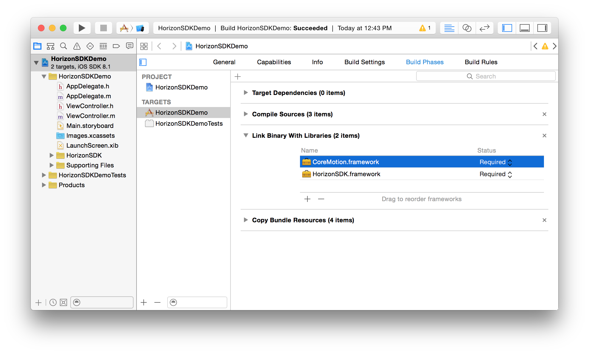
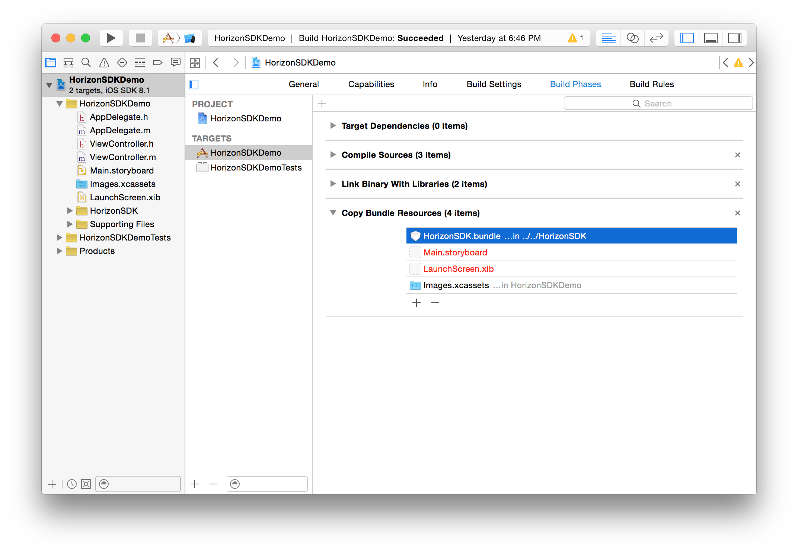

Installation Guide Document
Overview
Horizon iOS SDK provides an easy to use library for developers who want to add video recording capabilities to their iOS apps.
Horizon iOS SDK is built on top of the AVFoundation stack, is GPU accelerated and has full support for realtime, predefined and custom CIFilter instances.
This guide describes the setup of Horizon SDK. For a quick start coding guide, take a look and the Quick Start document.
Project Setup
Prerequisites
In order to follow this guide, you must have the iOS 8.0 SDK and Xcode 6.0 installed on your system. For the latest versions, please visit Apple’s iOS Dev Center.
Run time requirements
The minimum iOS version supported by the SDK is iOS 7.1.
Configuration
In order to use the SDK in an existing app, you must do the following:
Add files
Copy the HorizonSDK folder into your project (select “Create groups for any added folders” if needed). The folder consists of at least one static framework and one resource bundle. Each static library is a universal binary for use on iOS device and simulator architectures (armv7/64 and i386/x86_64).
Link against libraries
Visit your target’s “Link Binary With Libraries” build phase. Make sure added the following library:
CoreMotion.framework

Link other Frameworks automatically
Make sure that the “Link Frameworks Automatically” option is set to YES (under Build Settings > Apple LLVM 6.0 - Language - Modules)

Add Linker Flags
Update your target’s (or project’s) build settings to include the following “Other Linker Flags” (under Build Settings > Linking):
-ObjC
-lstdc++

Copy resources
Make sure HorizonSDK.bundle is included in your target’s “Copy Bundle Resources” build phase.

Install documentation (optional)
If you would like to access the HorizonSDK documentation through the Organizer and Quick Help in Xcode, please copy com.hvt.Horizon-SDK.docset from the HorizonSDK Documentation directory into ~/Library/Developer/Shared/Documentation/DocSets/ and restart Xcode. From the console:
cp -r com.hvt.Horizon-SDK.docset ~/Library/Developer/Shared/Documentation/DocSets/
Installation complete!
You are now ready to use Horizon SDK and add video recording capabilities to your app! Learn how in our Quick Start guide.